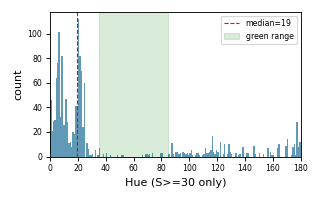
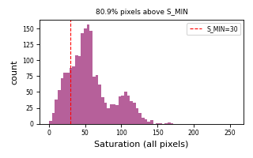
bbox: 29×71 px
ratio = 0.0170
CNN: green (0.998)
median Hue (S≥30): 19.0
median Sat (S≥30): 57
% px above S_MIN: 80.9%

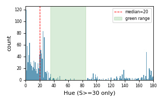
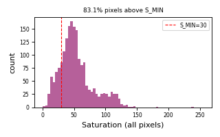
bbox: 27×70 px
ratio = 0.0185
CNN: green (0.996)
median Hue (S≥30): 20.0
median Sat (S≥30): 52
% px above S_MIN: 83.1%

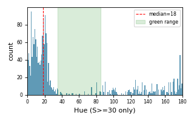
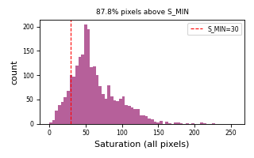
bbox: 30×79 px
ratio = 0.0245
CNN: green (0.995)
median Hue (S≥30): 18.0
median Sat (S≥30): 59
% px above S_MIN: 87.8%

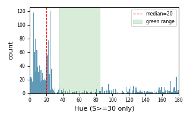
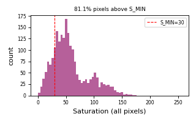
bbox: 26×82 px
ratio = 0.0328
CNN: green (0.997)
median Hue (S≥30): 20.0
median Sat (S≥30): 56
% px above S_MIN: 81.1%

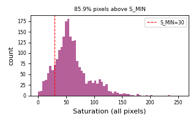
bbox: 28×78 px
ratio = 0.0330
CNN: green (0.997)
median Hue (S≥30): 19.0
median Sat (S≥30): 58
% px above S_MIN: 85.9%

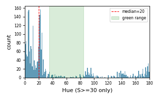
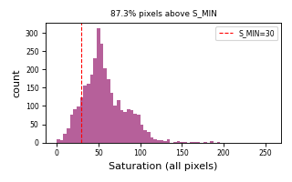
bbox: 40×80 px
ratio = 0.0334
CNN: green (0.997)
median Hue (S≥30): 20.0
median Sat (S≥30): 56
% px above S_MIN: 87.3%

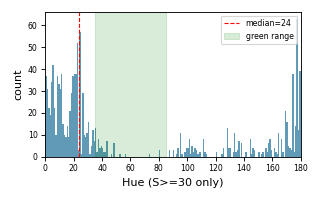
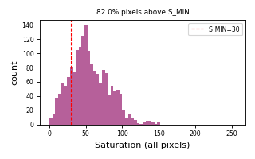
bbox: 25×71 px
ratio = 0.0338
CNN: green (0.999)
median Hue (S≥30): 24.0
median Sat (S≥30): 57
% px above S_MIN: 82.0%

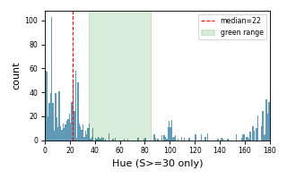
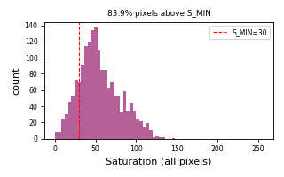
bbox: 25×69 px
ratio = 0.0342
CNN: green (0.998)
median Hue (S≥30): 22.0
median Sat (S≥30): 54
% px above S_MIN: 83.9%

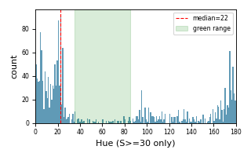
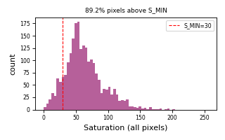
bbox: 29×78 px
ratio = 0.0349
CNN: green (0.997)
median Hue (S≥30): 22.0
median Sat (S≥30): 61
% px above S_MIN: 89.2%

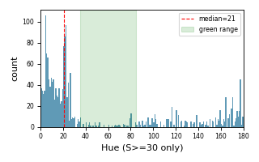
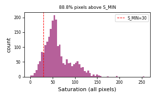
bbox: 30×77 px
ratio = 0.0364
CNN: green (0.999)
median Hue (S≥30): 21.0
median Sat (S≥30): 57
% px above S_MIN: 88.8%

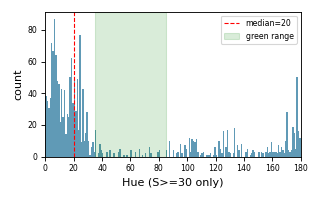
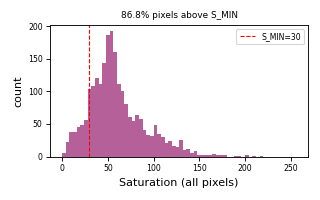
bbox: 29×79 px
ratio = 0.0375
CNN: green (0.996)
median Hue (S≥30): 20.0
median Sat (S≥30): 58
% px above S_MIN: 86.8%

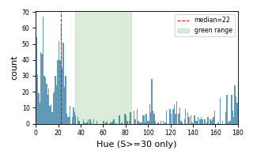
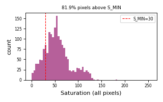
bbox: 26×70 px
ratio = 0.0379
CNN: green (0.999)
median Hue (S≥30): 22.0
median Sat (S≥30): 56
% px above S_MIN: 81.9%

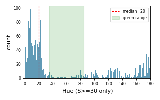
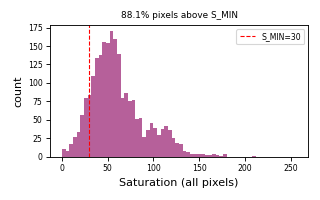
bbox: 29×79 px
ratio = 0.0388
CNN: green (0.996)
median Hue (S≥30): 20.0
median Sat (S≥30): 58
% px above S_MIN: 88.1%

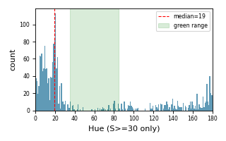
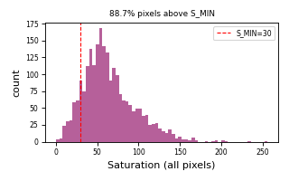
bbox: 29×79 px
ratio = 0.0393
CNN: green (0.997)
median Hue (S≥30): 19.0
median Sat (S≥30): 61
% px above S_MIN: 88.7%

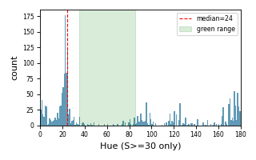
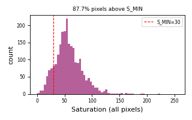
bbox: 28×83 px
ratio = 0.0396
CNN: green (1.000)
median Hue (S≥30): 24.0
median Sat (S≥30): 57
% px above S_MIN: 87.7%

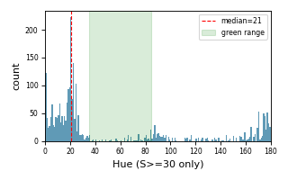
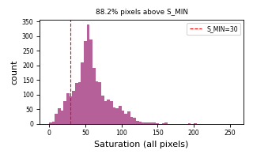
bbox: 40×78 px
ratio = 0.0397
CNN: green (0.998)
median Hue (S≥30): 21.0
median Sat (S≥30): 56
% px above S_MIN: 88.2%

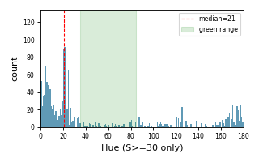
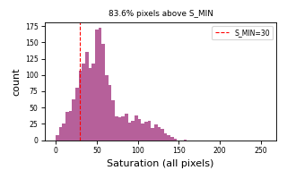
bbox: 28×74 px
ratio = 0.0405
CNN: green (0.999)
median Hue (S≥30): 21.0
median Sat (S≥30): 55
% px above S_MIN: 83.6%

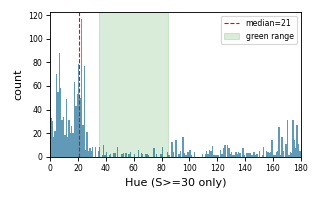
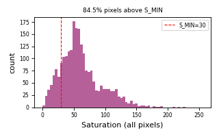
bbox: 29×80 px
ratio = 0.0418
CNN: green (0.997)
median Hue (S≥30): 21.0
median Sat (S≥30): 59
% px above S_MIN: 84.5%

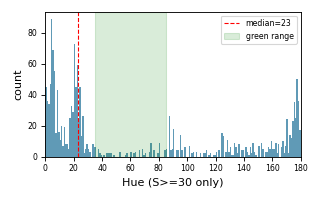
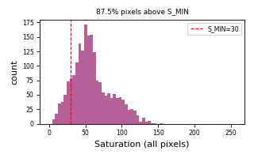
bbox: 29×70 px
ratio = 0.0424
CNN: green (0.999)
median Hue (S≥30): 23.0
median Sat (S≥30): 57
% px above S_MIN: 87.5%

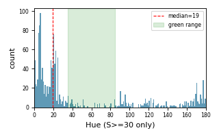
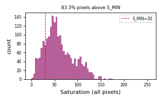
bbox: 26×79 px
ratio = 0.0433
CNN: green (0.998)
median Hue (S≥30): 19.0
median Sat (S≥30): 59
% px above S_MIN: 83.3%

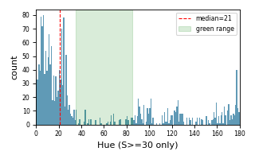
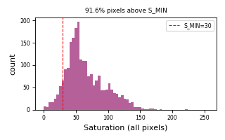
bbox: 29×78 px
ratio = 0.0438
CNN: green (0.999)
median Hue (S≥30): 21.0
median Sat (S≥30): 59
% px above S_MIN: 91.6%

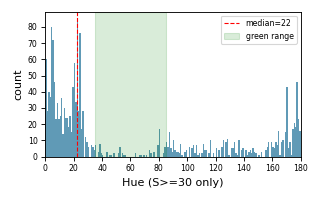
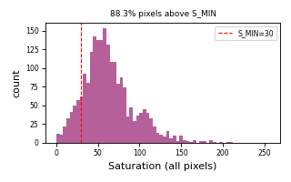
bbox: 28×77 px
ratio = 0.0445
CNN: green (0.998)
median Hue (S≥30): 22.0
median Sat (S≥30): 61
% px above S_MIN: 88.3%

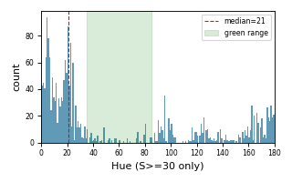
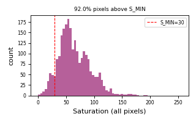
bbox: 30×80 px
ratio = 0.0446
CNN: green (0.997)
median Hue (S≥30): 21.0
median Sat (S≥30): 62
% px above S_MIN: 92.0%

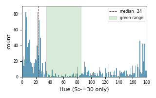
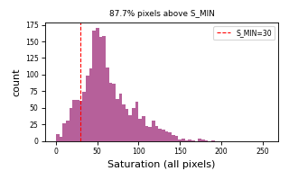
bbox: 29×75 px
ratio = 0.0446
CNN: green (0.997)
median Hue (S≥30): 24.0
median Sat (S≥30): 58
% px above S_MIN: 87.7%

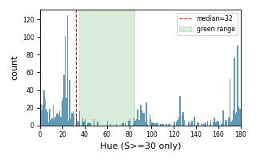
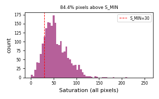
bbox: 27×80 px
ratio = 0.0454
CNN: green (1.000)
median Hue (S≥30): 32.5
median Sat (S≥30): 54
% px above S_MIN: 84.4%

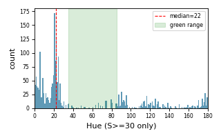
bbox: 30×82 px
ratio = 0.0488
CNN: green (0.999)
median Hue (S≥30): 22.0
median Sat (S≥30): 58
% px above S_MIN: 89.2%

bbox: 26×81 px
ratio = 0.0489
CNN: green (0.997)
median Hue (S≥30): 20.0
median Sat (S≥30): 57
% px above S_MIN: 82.3%